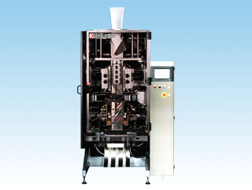
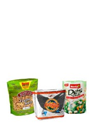

KBF-6391G2型 縦ピロー包装機
生産終了機


KBF-6391G2型の
新パッケージ
｢フレックスカン｣
特 徴
■
ビジュアル的インパクトの高い新形態。
■
内容物に依存しない優れた自立性。
■
イージーオープン、破棄しやすい、人に優しいパッケージ。
■
メンテ・衛生面
本体の内部を容易に見える構造とし、状態を把握するのが容易です。
本体ＳＵＳ仕様の為（一部の製品は除く）耐久性に優れ、衛生的です。
■
安定稼働と包装不良対策
当社独自のマイコン制御と診断機能により、トラブルと不良品の減少を実現。
■
｢フレックスカン｣のメリット
｢フレックスカン｣はフィンシール、トップ、ボトムシールおよびガセット部を気にせずに４側面およびトップ、ボトムに印刷することができます。
容器や缶と比較して価格の低減と原材料削減が可能です。
二次包装の容易さや配送、販売および陳列スペースを効率的に活用できる直線的な形状です。
仕 様
■
使 用 例
ビスケット，キャンディー，マカロニ，
その他のバラもの，粉体，粒体 など
後継機
KBF-6000X型
HOMEへ戻る
Copyright (C) KAWASHIMA PACKAGING MACHINERY CO.,LTD. All Rights Reserved.